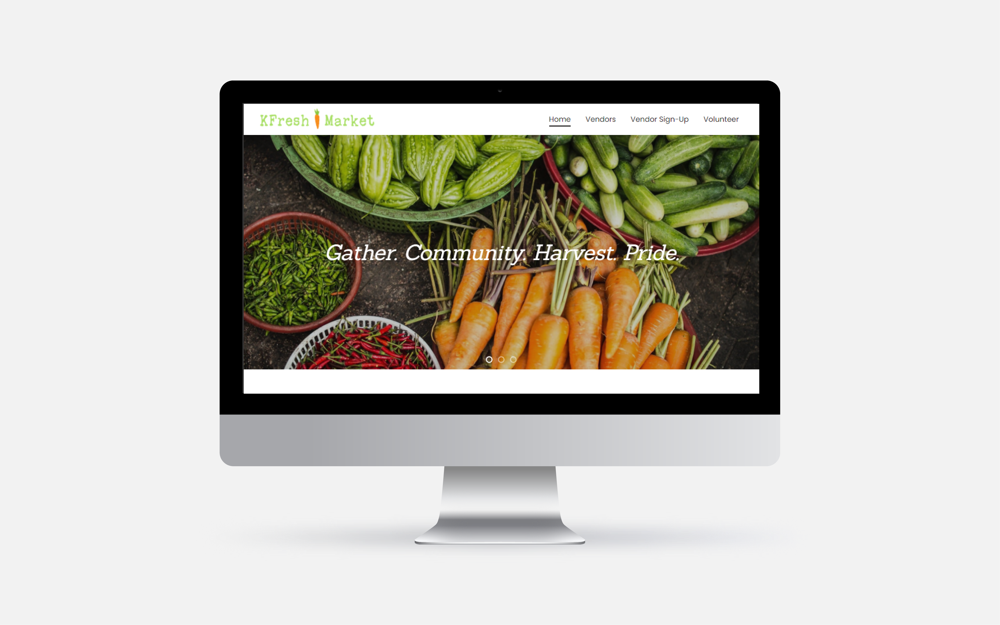

The Kinnelon Farmer's Market, "KFresh Market", will be launching in June 2021, and I worked with the organization through the research, ideation, wireframing and prototyping, and iteration phases to launch the site.
Final Product
Problem: The KFresh Market needed a website where attendees could locate information about the market, vendors could register to sell goods, and volunteers could sign up to help with organizing and running the market.
The Project: Create and launch a website for the KFresh Market that allows potential guests to learn more so they can attend, and that enables vendors and volunteers to register.
Community members of all ages in Kinnelon, NJ and the surrounding North Jersey area
Local farmers and craftsmen
Pain Points
Community members want the opportunity to purchase fresh produce and congregate in community spaces
Local farmers and craftsmen want a place to sell their goods
The KFresh Market launches early this summer, and the organization wants an easy way for guests and vendors to find information about it
Define
Problem Statement
KFresh Market needs a website to allow community members to learn about the market, vendors to register to sell their goods, and volunteers to register to assist.
Ideate
Brainstorming the project
Visual Design
Typography:
Sanchez
Poppins
Color Scheme:
Wireframes & Prototypes
Home Page

Vendor Sign-Up Page
Volunteer Page
Iteration
Finalized wireframes and then discussed with the KFresh team one last time to make changes according to business needs
Changes Made
Updated the mission statement, address and schedule of the market
Updated the banner on the home page from the previous smaller banner, to the current, nearly full page banner
Updated forms to submit to the correct email address of the organization
Final Product
Retrospective:
Changes I would make given more time and resources...
Test the site with market attendees
Include images from the market to allow the site to better connect with community members
Include an "About" page so that visitors from outside the community can learn more about the market
Remove the "Vendors" tab from the site map and include the vendors names and logos in a scroll bar on the home page